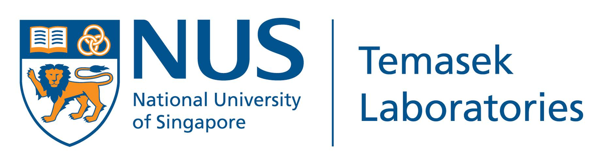
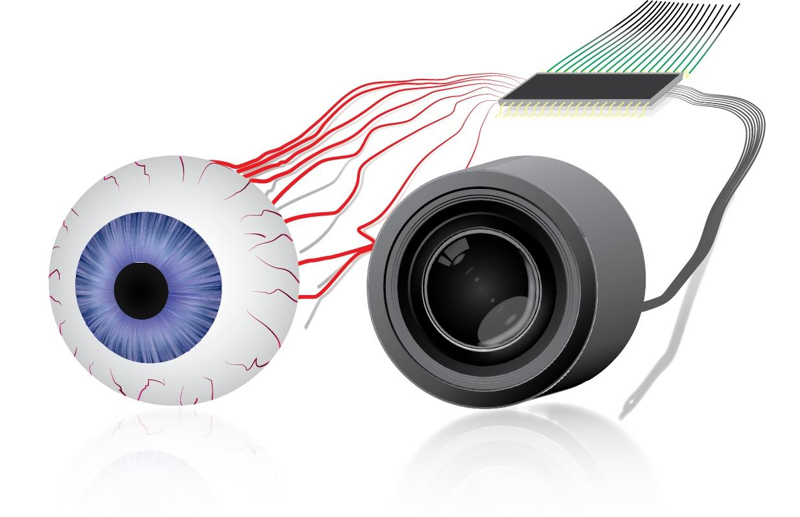
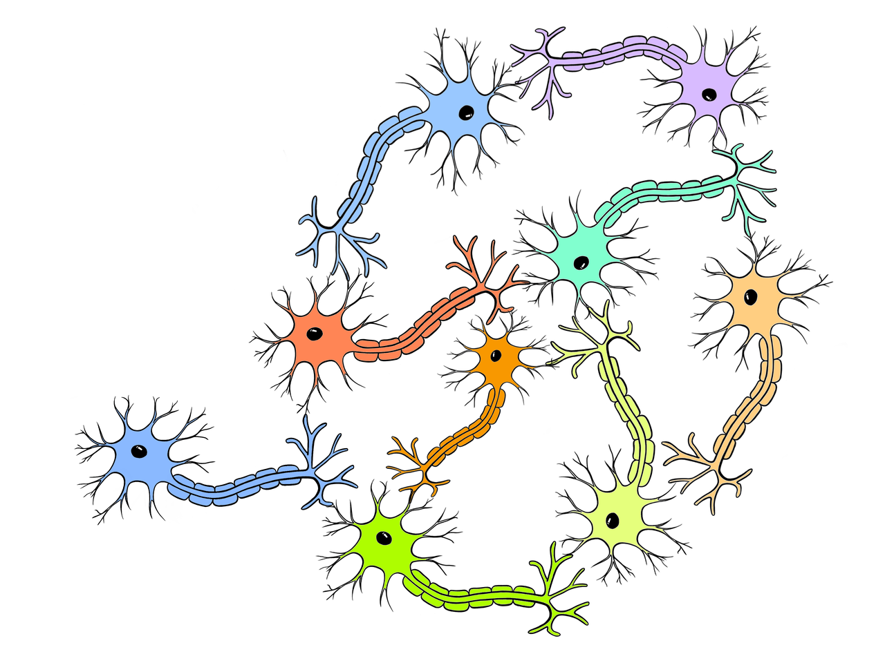

NUS Neuromorphic Group
|  |
We are a Research Group based on NUS (Temasek Laboratories and SINAPSE). Our lab performs research on neuromorphic computing, spiking neural networks, event-based vision with the aim of developing efficient algorithms for low resource applications and high temporal fidelity.
